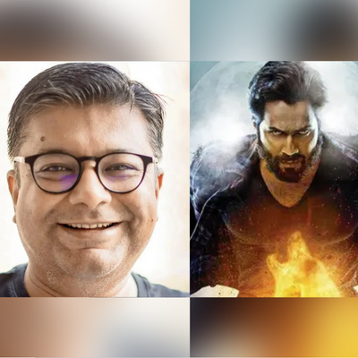

|
|  | We would 100% like to make a sequel of 'Bhediya': Writer Niren BhattAs Bhediya wins praise, writer says Varun-led monster comedy has been designed to pave way for second edition Last Updated: Dec 14, 2022, 07:38 IST
'Bhediya' writer Niren Bhatt said that the makers of the Varun Dhawan film would 100% "like to make a sequel". "We've deliberately kept several threads open," Niren said. Talking about the crossover of 'Bhediya' and 'Stree', Niren added, "[The story of Bhediya] has a connection with 'Stree'...We're trying to merge...the films, and make this into a universe [of horror comedies]." |
Drishyam 2 crosses ₹300 crore worldwide, is now the third-highest-grossing Hindi film of 2022Ajay Devgn and Tabu-starrer Drishyam 2 has crossed the ₹300-crore barrier in worldwide gross earnings, making it the third Bollywood film to do so this year. Last Updated: Dec 14, 2022, 17:45 IST
Ajay Devgn’s Drishyam 2 has become the third Bollywood film to enter the ₹300-crore club this year. The thriller crossed ₹300 crores in gross earnings worldwide on Tuesday, further solidifying its status as a superhit. The film, a sequel to the 2015 hit Drishyam and a remake of the Malayalam film of the same name, has been one of the most profitable films of the year." |
©2022, All right reserved by Precisenews.com, Designed by: Harsh Tejaniya